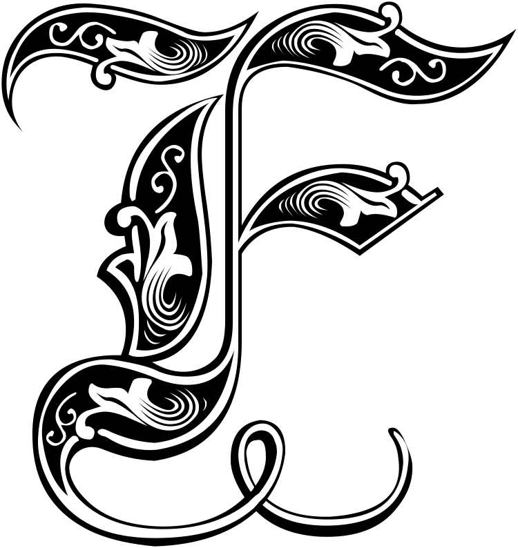

F 
The first piece of evidence: Luo Ji’s dark forest experiment that led to the destruction of 187J3X1 and its planetary system. The supposition that the system had been destroyed by some extraterrestrial intelligence had always been controversial. The astronomical community had always voiced the loudest objections. There were two main views: One camp believed that the object observed striking the star at lightspeed was insufficient to destroy the star. The death of 187J3X1 was thus likely the result of a natural supernova. Since there was incomplete predestruction data for this star, it was impossible to say definitively whether the star possessed the requisite conditions for going supernova. Considering the long time that elapsed between Luo Ji’s broadcast and the star’s explosion, there was a high probability that the event was indeed natural. A second camp conceded that a lightspeed object did kill the star, but the “photoid” might very well be a natural phenomenon in the galaxy. Although to date no second photoid had been detected, there had been observations of massive objects being accelerated to extremely high speeds by naturally occurring forces. For instance, a supermassive black hole near the center of the galaxy was perfectly capable of accelerating some small object to near the speed of light. In fact, the center of the galaxy might produce a large number of such projectiles, but due to their small size, they were rarely seen.
The second piece of evidence: the terror Trisolaris showed for dark forest deterrence. This was, to date, the most convincing proof for dark forest theory, but humanity knew nothing of the Trisolarans’ own process of derivation and the evidence they relied on; so, scientifically speaking, it was insufficient to constitute direct proof. It was possible that Trisolaris submitted to a state of deterrence balance with humanity for some other unknown reason, and finally gave up the conquest of the Solar System. Many hypotheses were proposed to explain this unknown reason, and although none were absolutely convincing, none could be conclusively disproven, either. Some scholars proposed a new theory of “delusions of cosmic persecution,” which argued that the Trisolarans also had no proof of the validity of dark forest theory. However, due to the extremely harsh environment they had evolved in, the Trisolarans suffered a mass persecution complex against cosmic society. This persecution delusion was similar to Medieval religions on the Earth, and was merely a faith held by a majority of Trisolarans.
The third piece of evidence: the confirmation of dark forest theory given by the four-dimensional Ring. Clearly, the Ring had obtained the words “dark forest” from the Rosetta System, specifically the section discussing human history. This phrase appeared often in historical records dating from the Deterrence Era, and it was not surprising that the Ring would use it. However, in the dialogue between the Ring and the exploration team, the section where the concept was invoked was very brief and its exact meaning ambiguous. It was not enough to conclude that the Ring really understood the meaning of the words it used.
Since the Deterrence Era, the study of dark forest theory had developed into its own subject. Other than theoretical research, scholars also conducted large numbers of astronomical observations and built numerous mathematical models. But for most scholars, the theory remained a hypothesis that could be neither confirmed nor disproven. Dark forest theory’s true believers were the politicians and the public, and members of the public mostly chose to believe or disbelieve based on their own situations. After the commencement of the Broadcast Era, more and more people leaned toward treating dark forest theory as merely a delusion of cosmic persecution.